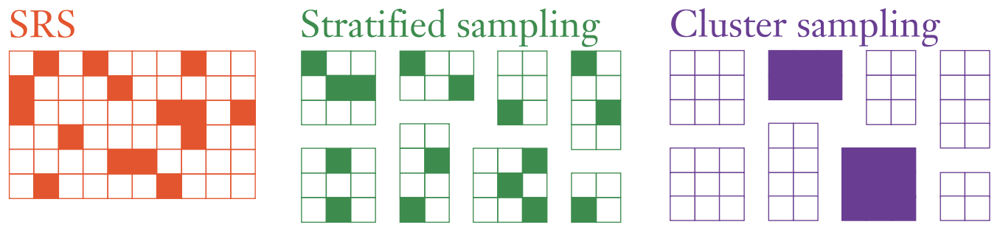

Lab 3.2 - Sampling

Different Sampling Procedures
Data Collection
Data was collected from King County government sources that register all property sales within the county in the year 2022.
We are interested in taking some samples from this overall list of properties. If we define the dataset as the population:
What is the sample frame?
What are some key observations that are outside of our sample frame but are probably relevant to the types of conclusions we would like to draw from our data set?
Types of Samples
Simple Random Sample
Simple random samples (SRS) have some nice properties. If implemented correctly, the results of this survey will mean that on average your sample will be representative of the overall population. You can run a simple random sample in R with the following code from the infer library (make sure you have that library installed and loaded - documentation here):
slices <- kc.house %>%
rep_slice_sample(n = 50, reps = 10000, replace=TRUE)
y.bars <- slices %>%
group_by(replicate) %>%
summarize(mean.price = mean(sale_price))Where n controls how large you would like your sample to be and reps controls how many SRS you do.
We have two options with simple random sampling: sampling with and without replacement.
With replacement means that when we sample a case, after the observation is selected, it is returned to the overall population and is available to be selected again. Without replacement means that once an observation is sampled, it cannot be selected again.
In large populations and small samples, the choice does not really matter (as the odds of picking the same observation again are very small). However, when \(n\) is small and there is a reasonable possibility of picking the same case again, the difference can matter.
We can see the difference by just considering the first 100 cases and sampling from them. You can use the following code (documented here) to obtain the first 100 cases:
first100 <- kc.house %>%
slice_head(n=100)Calculate the population mean for the first 100 cases
Using the first 100 case subset, calculate the mean of price 10000 times using a sample size of 10. What was the average mean? What was the true population mean?
Now, try changing
replace=TRUEtoreplace=FALSE. Run the same calculation but now without replacement.View your histogram of means both with and without replacement and the mean of all of your sample means. How does with and without replacement differ? Why do you think they do?
Stratified Sampling
Stratified sampling guarantees that some demographic characteristic is exactly represented in our sample as they are in the larger population.
If we were a housing analyst, we might want to make sure that that the city of BELLVUE is accurately represented in our sample if we intended to do some business there.
Take 1000 samples of size 100 using simple random sample of the entire population using the method in the previous section. How close to the true mean were your samples? What did the distribution look like?
Now, do a stratified sample of houses with a view using the below function (copy and paste it into
setupblock and run thesetupblock again).subset.ais the vector of your first subset andsubset.bis the remaining data.proportion.ais the proportion of subset A in the total population.
mean.strat.sample <- function(numdraws, numsamples, subset.a, subset.b, proportion.a) {
means.of.variable <- c()
meanonesample <- 0
for (i in 1:numsamples) {
samplea <- sample(subset.a,round(numdraws*proportion.a),replace=TRUE)
sampleb <- sample(subset.b,round(numdraws*(1-proportion.a)),replace=TRUE)
meanonesample <- mean(c(samplea,sampleb), na.rm=TRUE)
means.of.variable[i] <- meanonesample
}
means.of.variable
}
means <- mean.strat.sample(100, 100000, <bellevue subset>$sale_price, <non bellevue houses subset>$sale_price, <proportion of houses that in bellevue>)Compare the mean result from this sample with the mean result from SRS. Why is there a difference? How about the distribution?
What is another feature of houses we might want to stratify by? If you have time, repeat the stratification process with the new stratification variable.
Cluster Sampling
Cluster sampling has some obvious benefits for doing a project like trying to determine the price of a house if one is a real estate researcher. The idea is to randomly select some higher level unit, like postal code, and then doing a complete census of every observation in that unit. Each of these is called a cluster. In the case of our housing dataset, we can cluster sample by subdivision with the following R code:
subdivisions <- sample(unique(kc.house$subdivision),20)
subdivisions
clusters<-kc.house[kc.house$subdivision %in% subdivisions,]
# note that the %in% command checks to see if the current zip code matches
# any of the subdivisions in our randomly selected list (vector) of subdivisions
# to be included in our cluster.
unique(clusters$subdivision)
mean(clusters$sale_price)We can generate the means of an arbitrary number of cluster samples with the following function:
mean.cluster.sample <- function(num.clusters.to.sample, numsamples, variable, cluster.var) {
means.of.variable <- c()
meanonesample <- 0
df<- data.frame(variable, cluster.var)
for (i in 1:numsamples) {
clustercode <- sample(unique(cluster.var),num.clusters.to.sample,replace=TRUE)
meanonesample <- mean(df$variable[df$cluster.var %in% clustercode])
means.of.variable [i] <- meanonesample
}
means.of.variable
}
means <-mean.cluster.sample(20, 10000, kc.house$sale_price, kc.house$subdivision)Try starting with 5 clusters and 10000 samples. What is your mean of means? What is the distribution of means?
Try varying the number of clusters. How does that change your results? How do your results compare to SRS? Think of some reasons why they may or may not be different.
Systematic Sampling
Systematic sampling is using some defined method to sample every nth unit by using some type of decision rule, such as every 10th customer to enter a store on a given day.
Normally we can only justify systematic sampling if the decision rule is unrelated to any of the other variables. That is, the method of selecting cases must be independent of all the predictor/response variables.
We can take a systematic sample of our dataset with the following set of commands:
library(lubridate)
kc.house$date.cleaned<-as_date(kc.house$sale_date)
firstdayofmonth<-kc.house[day(kc.house$date.cleaned)==1,]What are some ways that our systematic sample might be biased? Write down some reasons you think it might be biased.
Create a sampling distribution of your
firstdayofmonthdataset and compare it to the one of the overall dataset you got from the first section.Try changing the day of the month and calculating the mean in the systematic sample. Do you think this sampling method is biased now? How about the variation in mean estimates? Is it close to simple random sampling? Why or why not?
What’s another systematic sample method? Make some notes about another strategy to systematically sample the observations in this dataset. If you have time see if you can implement it in R and then conduct the same analysis as
Convenience Sampling
Convenience sampling is just sampling the easiest to find cases for the researcher. Often convenience sampling might include asking your friends or those living near you. In the context of the way this data set was gathered, a convenience sample might be to just the last 100 sales happened to be in the database. You can analyze these by simply typing:
convenience.sample <- kc.house %>%
slice_tail(n=100)What is the characteristics of this convenience sample? How similar is it to the overall dataset?
What are some other convenience samples that you can think of? How similar are they do the overall dataset?
Footnotes
Illustration courtesy of https://civilstat.com/2022/03/surveycv-k-fold-cross-validation-for-complex-sample-survey-designs/↩︎